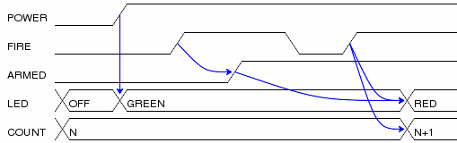
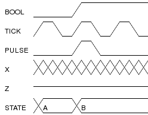

DRAWTIMING SAMPLES |
||
| ABOUT | SAMPLES | DOWNLOAD | INSTALL | USAGE |
TUTORIALLet's dissect an example input file as a means of learning the file format: # initialize the signals POWER=0, FIRE=0, ARMED=0, LED=OFF, COUNT=N. # turn on the power POWER=1 => LED=GREEN. # fire once to arm FIRE=1. FIRE => ARMED=1. FIRE=0. # fire a second time FIRE=1. FIRE, ARMED => LED=RED; FIRE => COUNT="N+1". Here is the resulting output image: This input file descibes the changes in five signals over a period of seven clock cycles. The end of each clock cycle is indicated with a period. For example, the following line indicates a single signal, named FIRE, became true during a clock cycle: FIRE=1. The first clock period of the input file provides the initial value for all signals to be diagrammed. The signals will appear on the timing diagram in the order they first appear in the input file. Signals are assumed to have the "don't care" value if their initial value is not given. Independent signal transitions which occur simultaneously are normally seperated by commas. Since signals aren't normally expected to change simultaneously, the initial state is a good example of this: POWER=0, FIRE=0, ARMED=0, LED=OFF, COUNT=N. Dependencies can also be indicated for a signal transition. Dependencies are rendered as arrows on the timing diagram from the last change in each dependency to the dependent signal transition. Here, the previous change in the state of FIRE causes a change in the ARMED signal. FIRE => ARMED=1. To indicate that a change in one signal causes an immediate change in another signal, list both signal changes in the same clock period: POWER=1 => LED=GREEN. For signal state changes with multiple dependencies, seperate the dependencies with commas: FIRE, ARMED => LED=RED. Sometimes, a single dependency causes multiple independent signals to change. Use a semicolon to start a new list of dependencies. Modifying the previous line to indicate that FIRE also causes COUNT to increment yields: FIRE, ARMED => LED=RED; FIRE => COUNT="N+1". MEMORY TIMINGHere is a sample memory timing diagram, showing the new "delay" annotation. CS1 = 1, OE = 1, ADDR = X, DATA = Z. CS1 = 0, OE = 0, ADDR = "". OE -tOE> DATA = ""; CS1 -tCS1> DATA; ADDR -tACC> DATA. OE = 1, CS1 = 1, ADDR = X. CS1 -tH> DATA = Z; OE -tH> DATA; ADDR -tH> DATA. Here is the corresponding timing diagram: 
SIGNAL VALUESHere is a sample showing all of the available signal values: BOOL=0, TICK=tick, PULSE=0, X=X, Z=Z, STATE=A. BOOL=1, PULSE=pulse, STATE=B. . Here is the corresponding timing diagram:  |
||